当宿は桑名駅前の繁華街エリア。徒歩圏内に、桑名名物のはまぐりから気軽な居酒屋・ラーメンまで揃っています。スタッフが実際に歩いて見つけたお店をご紹介します。
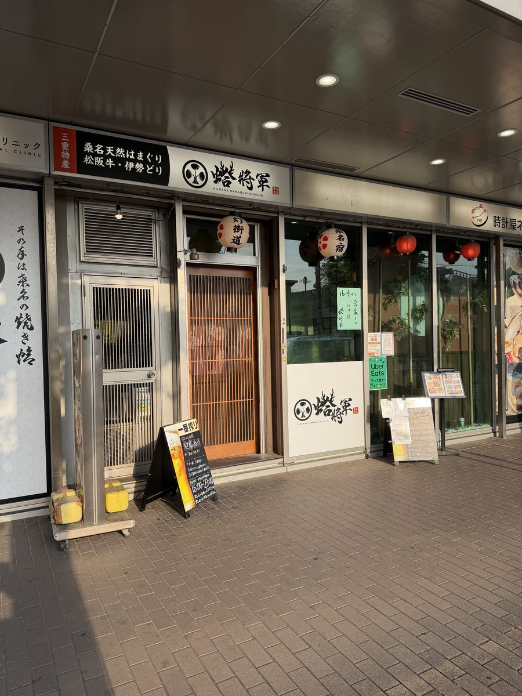
蛤将軍
桑名名物・天然はまぐりを味わうならここ。松阪牛や伊勢どりなど三重の名物が揃います。
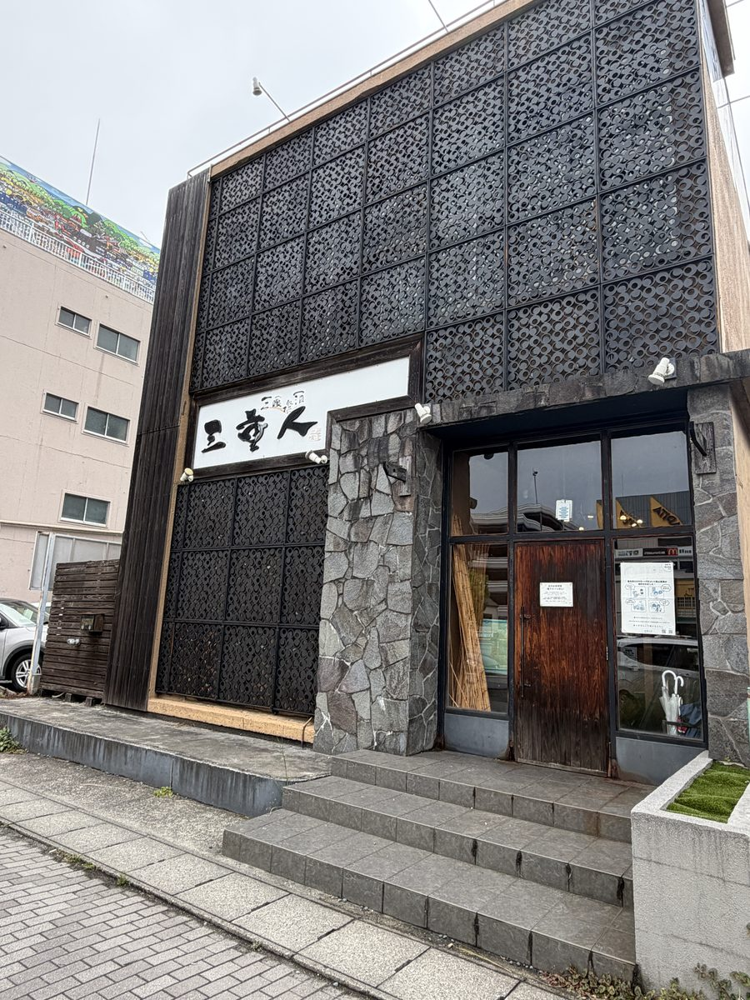
三重人
三重の地酒と海鮮が楽しめる駅前の居酒屋。
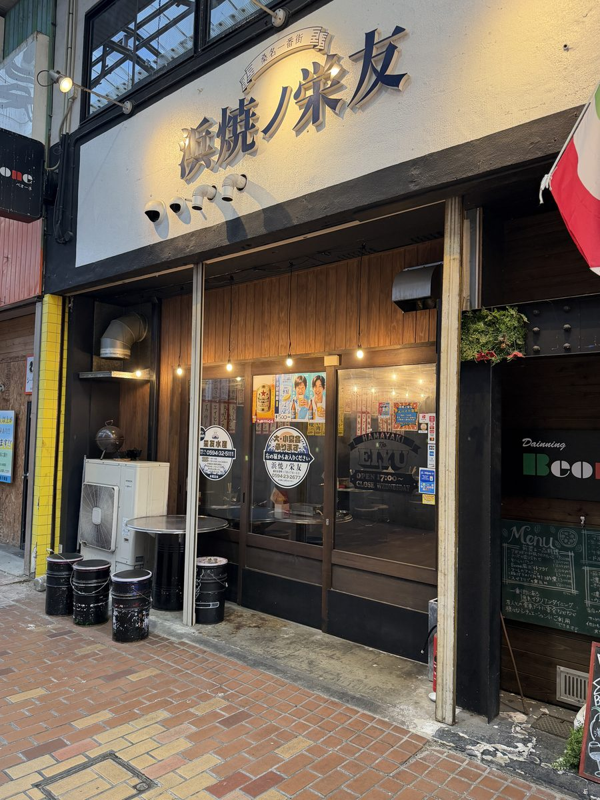
浜焼ノ栄友
海鮮を豪快に焼いて楽しむ浜焼きスタイルのお店。
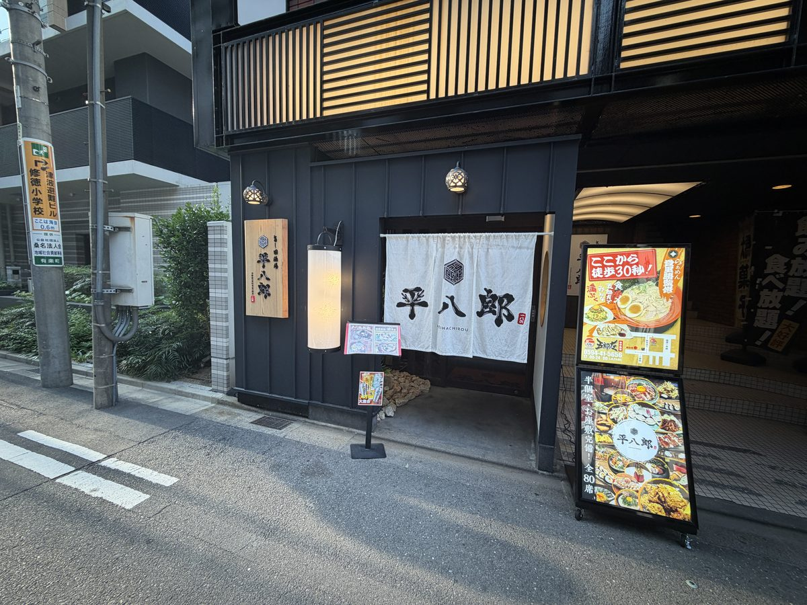
平八郎
落ち着いた構えの和風居酒屋。ゆっくり飲みたい夜に。
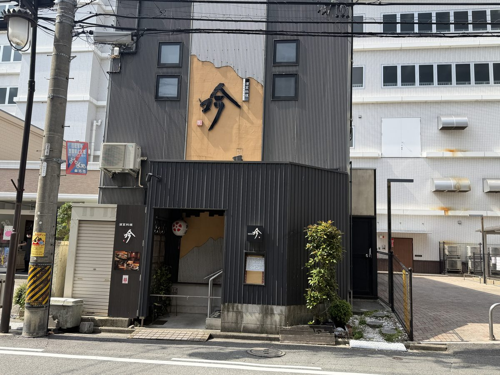
吟
黒い外壁が目印の和食・創作料理のお店。
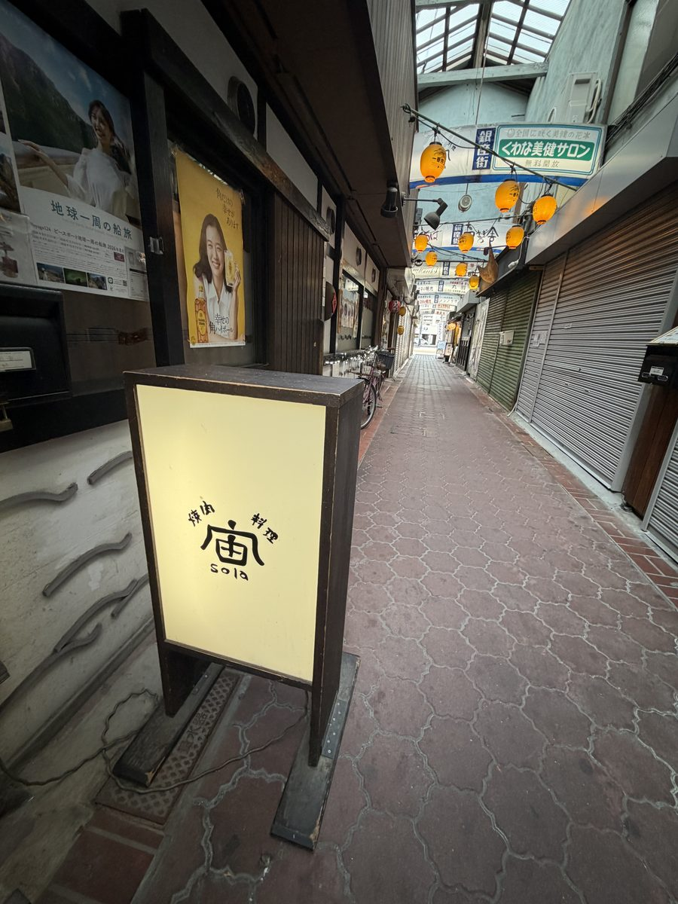
宙（sola）
レトロな銀座街の中にある焼肉料理のお店。
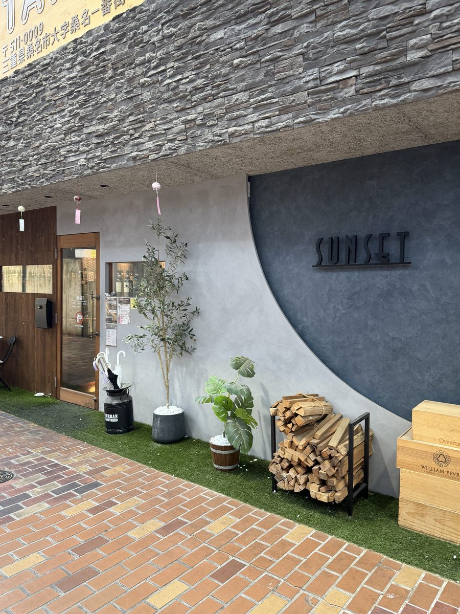
SUNSET
肉・ワイン・チーズが楽しめるモダンなダイニング。
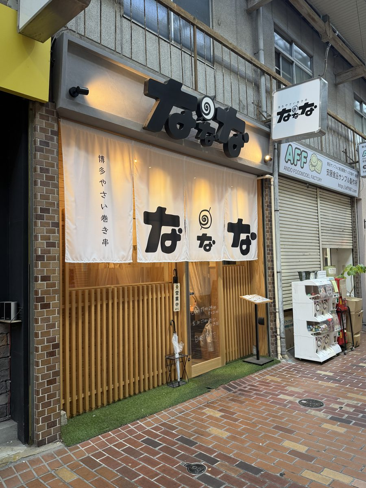
ななな
博多やさい巻き串のお店。野菜もお肉も串で楽しく。
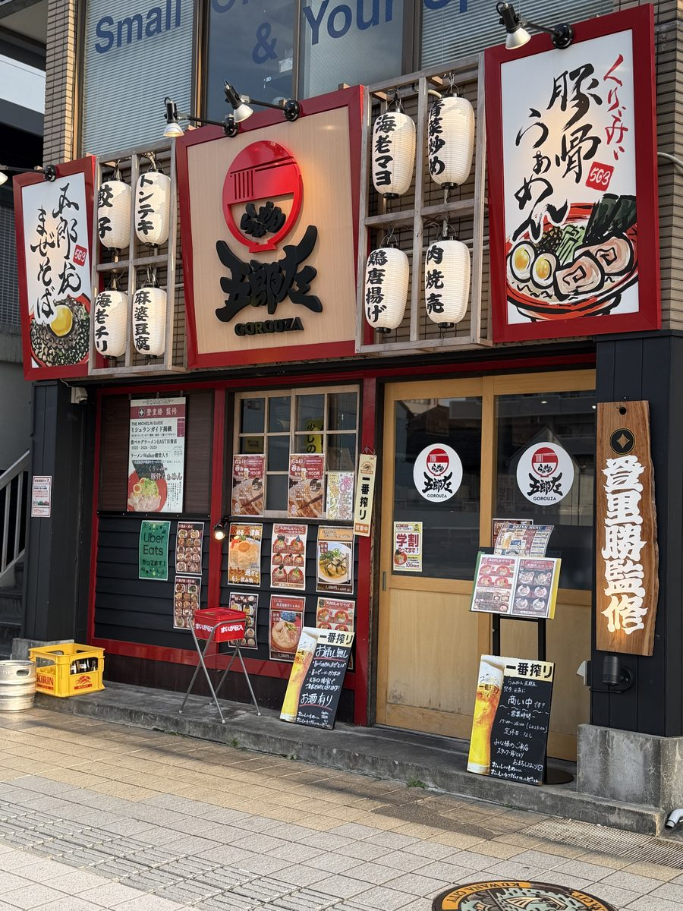
五郎左
飲んだあとの締めにもうれしい豚骨ラーメン。
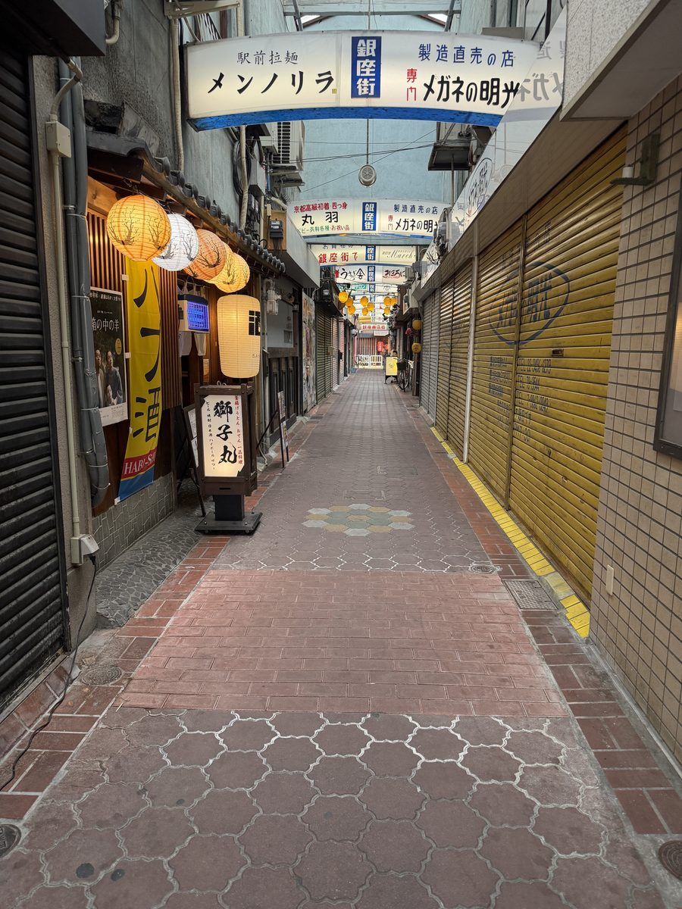
銀座街
提灯が灯る昭和レトロな横丁。はしご酒気分でどうぞ。
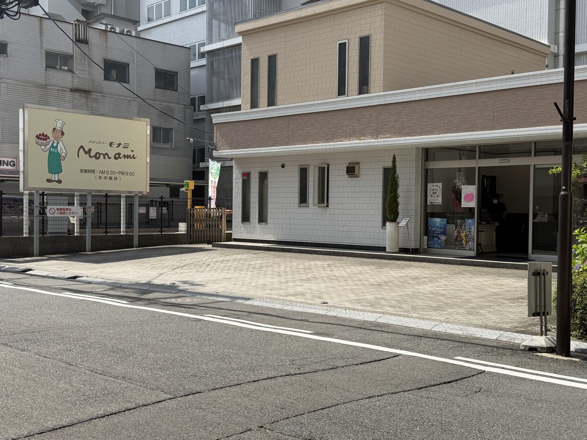
モナミ
当宿の目と鼻の先にあるケーキ屋さん。滞在中のおやつにどうぞ。
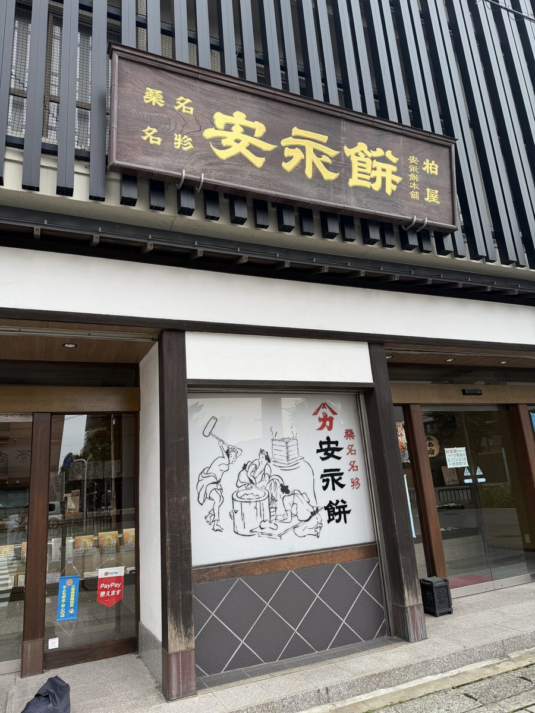
柏屋
桑名銘菓「安永餅」の老舗。お土産にぴったりです。
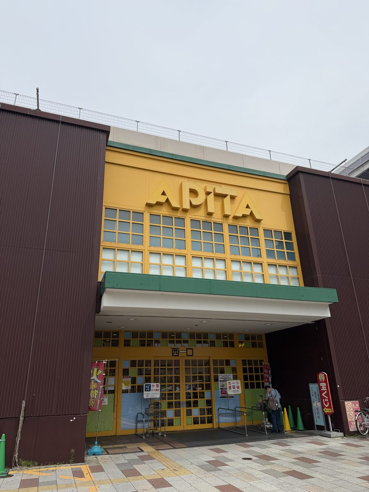
アピタ桑名店
食材やお酒の買い出しに。一棟貸しならではの「おうち宴会」の準備はここで。
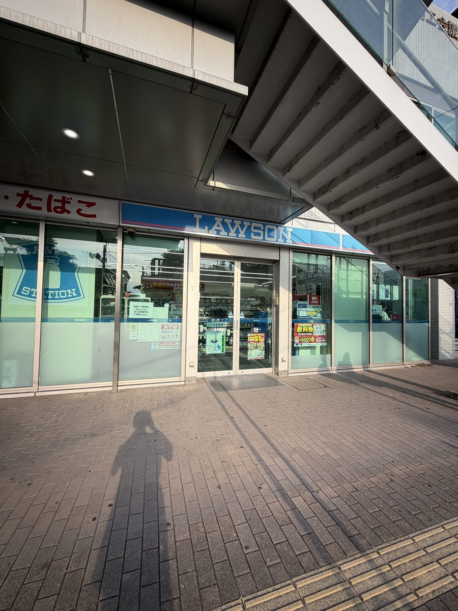
ローソン
24時間営業。急な買い物や夜食はこちらへ。
※営業時間・定休日は各店舗にてご確認ください。掲載内容は撮影時点の情報です。